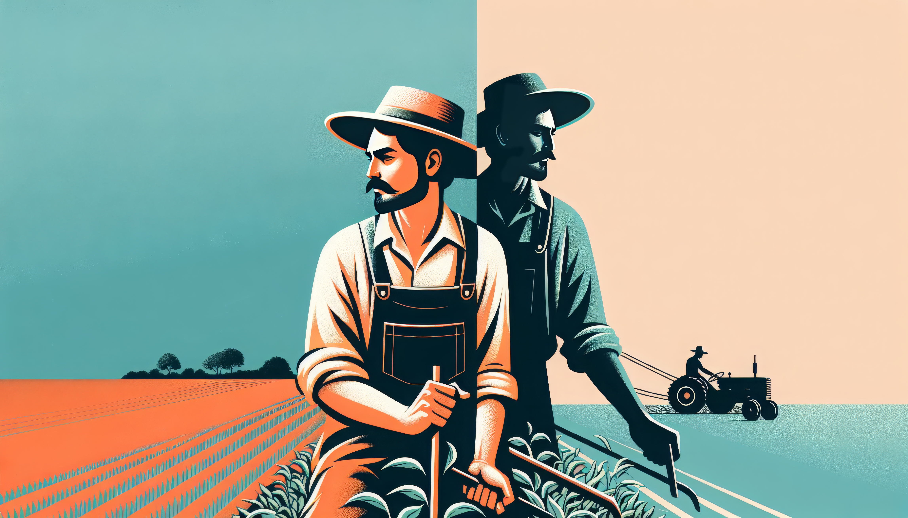

Explore vibrant fruits, fresh vegetables, fragrant herbs, and more. Learn about their uses, storage tips, and current market prices. Ask the bot for crop info!

Access detailed information on hundreds of horticultural crops from around the world.
Stay updated with real-time market prices and demand trends for your crops.
Our AI chatbot can answer all your horticulture questions instantly.
This platform has transformed how I manage my farm. The market info helps me get the best prices for my produce.
As a home gardener, I've learned so much about crop care and storage. The information is practical and easy to follow.
The chatbot is incredibly helpful! It answers all my questions about different crops and their uses instantly.
Horticulture not only boosts nutrition but also helps in economic empowerment. Whether you're a farmer, gardener, or just curious, you can explore our Crop Guides to learn more!
✅ Try asking the chatbot things like:
"Tell me about mint", "What is mango?", or "Uses of garlic"